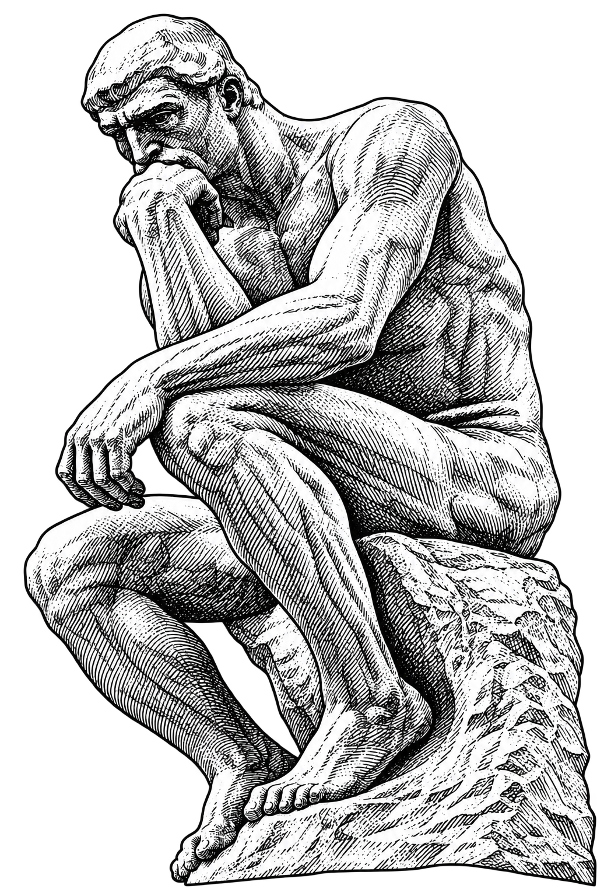
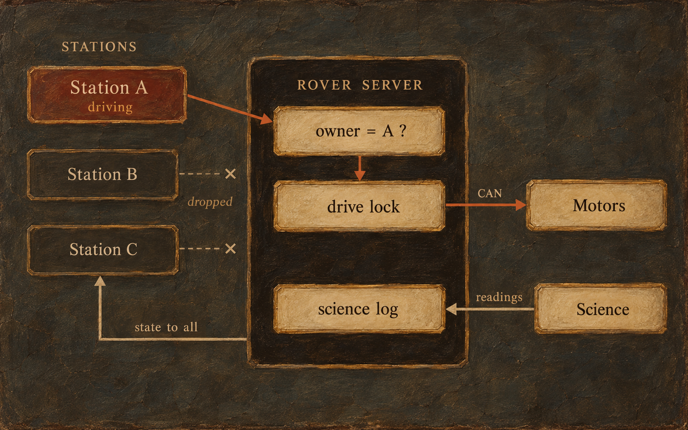

We drive our Mars rover from a base station over radio. Several laptops connect at once: a driver, an arm operator, and people watching cameras and science.
The rover accepted drive commands from any of them. Two live gamepads meant two command streams on one bus. A team rule can’t stop that, so the rover has to.
Browser mission control for SJSU’s URC rover, backed by a Python server on the rover. I built drive-control ownership and moved the science pipeline from the browser to the rover.

The rover tracks which station owns drive. Every drive command is checked against that owner before it reaches the motors. The UI locks drive for everyone else, but leaves the camera mast free.
The hard part was release. Stop first and a late packet can restart the motors. So release clears the owner, then sends stop under the drive lock. A dropped laptop does the same.
Science state used to live in one browser tab and vanished on refresh. Now the rover owns each site investigation and logs every reading, so all stations see the same data.
A drive command from any station that doesn’t hold control.
One trusted team on one network, so a socket session is identity enough.
Forced takeover. The E-stop covers emergencies.
I’d revisit identity. Control is tied to the socket session, so a one-second radio blip stops the rover and drops control. A stable station ID with a grace window would fix that.
I’d keep the shape: ownership in one small module, and the server as the only source of truth. That’s why the PR merged cleanly.